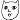

| 2012/08 11 Sat | 202回目*marika |
いつも読んでくださってる方、
初めて読んでくださった方、
コメントしてくださった方、
ありがとうございます。
かなにいつのまに寝顔ハント
されてしまったまりかです。
まりっか
 ←←
←←
←←
*****HaPPy BirThDAy*****
あすか♡2012.8.10
あすかーーーーーー

顔ちっちゃくて見えないよ

14歳になったんだって！わっか！笑
私より大人なのは本当。
めっちゃしっかりしてる。
この子何歳なんだって疑う

私のことよくからかうのよ

ぐっ
でもやっぱり妹ちゃんね

いちいちかわいいよ全くもう！
あすかはまじめで本当に頑張ってる
のがすごい伝わる。
メンバーの為にも、自分の為にもって
なんでも吸収してる。
すごいよ、本当に！
そんなあすかだいすきだよ‼
おめでとう

*****
今日の花火大会。
♪会いたかったかもしれない
♪おいでシャンプー
♪走れ！Bicycle
普段のイベントとは
また違った雰囲気で緊張しましたが、
楽しく踊れました

あー...花火見たかったああああ
終わったあとは、Lessonでした！
歌って踊りまくってます！
では、明日も頑張りまりか！
まりか
コメント(107)
2012/08/11 00:24